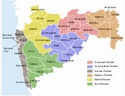

Maharashtra (/məhɑːˈrɑːʃtrə/; Marathi: [məhaɾaːʂʈɾə] (listen), abbr. MH or Maha) is a state in the western peninsular region of India occupying a substantial portion of the Deccan Plateau. Maharashtra is the second-most populous state in India and the second-most populous country subdivision globally. It was formed on 1 May 1960 by splitting the bilingual Bombay State, which had existed since 1956, into majority Marathi-speaking Maharashtra and Gujarati-speaking Gujarat. Maharashtra is home to the Marathi people, the predominant ethno-linguistic group, who speak the Marathi language, the official language of the state.
Maharashtra with a total area of 307,713 km2 (118,809 sq mi), is the third-largest state by area in terms of land area and constitutes 9.36 per cent of India's total geographical area. The State lies between 15°35' N to 22°02' N latitude and 72°36' E to 80°54' E longitude. It occupies the western and central part of the country and has a coastline stretching 840 kilometres[78] along the Arabian Sea.[79] The dominant physical feature of the state is its plateau character, which is separated from the Konkan coastline by the mountain range of the Western Ghats, which runs parallel to the coast from north to south.
